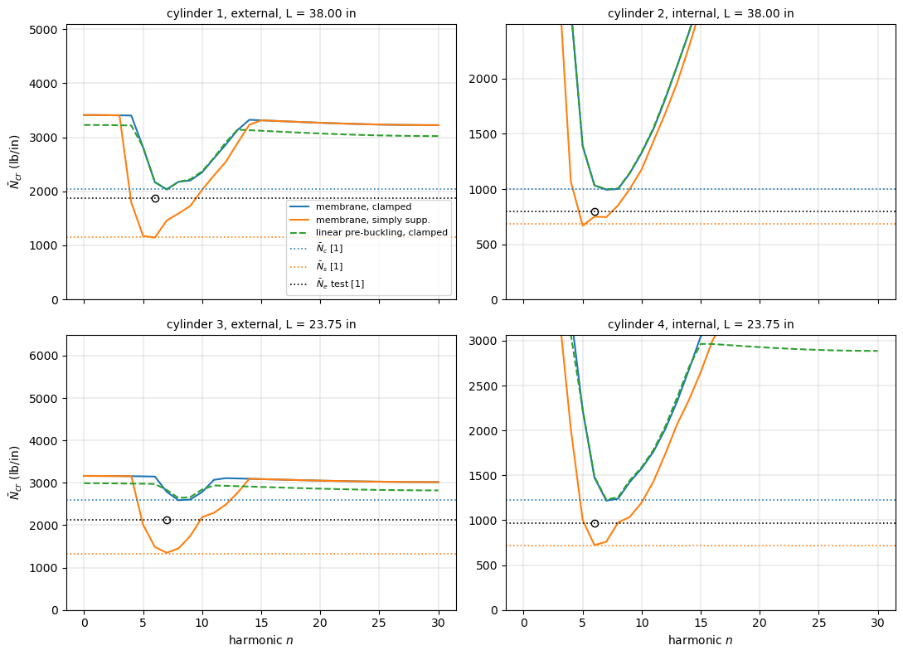
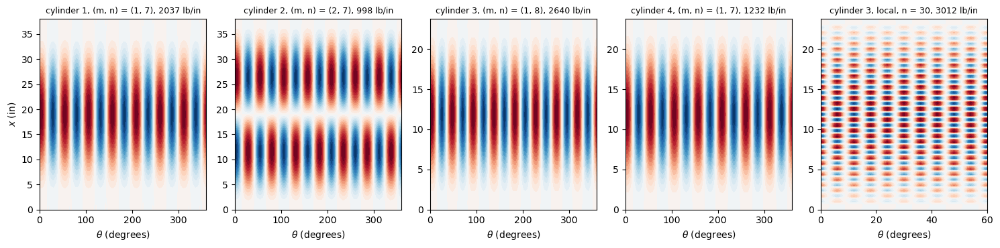
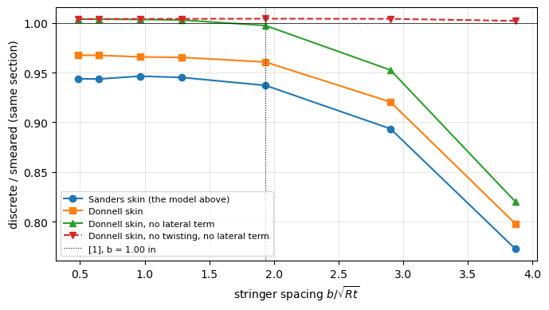

Axial buckling of integrally stringer-stiffened cylinders: Card and Jones (1966)#
Card and Jones [1] tested in axial compression twelve cylinders with longitudinal stiffeners, in pairs with the stiffeners outside (external) or inside (internal) the skin, and compared the buckling loads with a theory of eccentrically stiffened cylinders with the stiffeners averaged (“smeared”) over the skin, a membrane pre-buckling state, and simply supported or clamped ends. Their cylinders 1 to 4 have integral rectangular (blade) stiffeners machined from aluminium plates: cylinders 1 (external) and 2 (internal) are 38.00 in long, cylinders 3 (external) and 4 (internal) 23.75 in long. The externally stiffened cylinders carried more than twice the load of the internally stiffened ones ([1], summary).
Here the four cylinders are modelled with discrete stringers:
the skin with the BFSC cylinder element of Sanders-type kinematics,
BFSCCylinderSanders;each stringer with the BFSC plate element
BFSCPlate2Dof bfscplate2d, in the plane \((x, r)\) of the stringer, from the middle surface of the skin to the tip, its root tied to the skin.
As in the notebook of the vibration tests of Sewall and Naumann, the model is one stringer pitch with cyclic symmetry, given by the module blade_cylinder_sector.py next to this notebook: one linear buckling problem \((\boldsymbol{K}_{C0} + \lambda \boldsymbol{K}_G)\boldsymbol{\phi} =
\boldsymbol{0}\) per circumferential wave number \(n\). Besides bfsccylinder, it needs bfscplate2d, composites, SciPy and Matplotlib. The smeared-stiffener theory of [1], that of Block, Card and Mikulas [2], is computed with the module smeared_stiffened_cylinder.py, also next to this notebook.
References
[1] Card, M. F.; Jones, R. M., “Experimental and theoretical results for buckling of eccentrically stiffened cylinders”, NASA TN D-3639, October
[2] Block, D. L.; Card, M. F.; Mikulas, M. M., Jr., “Buckling of eccentrically stiffened orthotropic cylinders”, NASA TN D-2960, August
[3] Almroth, B. O., “Influence of edge conditions on the stability of axially compressed cylindrical shells”, AIAA Journal 4(1), 134-140, 1966. https://doi.org/10.2514/3.3396
[4] Batdorf, S. B., “A simplified method of elastic-stability analysis for thin cylindrical shells”, NACA Report 874, 1947. https://ntrs.nasa.gov/citations/19930091945
[5] Weller, T.; Singer, J., “Experimental studies on the buckling under axial compression of integrally stringer-stiffened circular cylindrical shells”, Journal of Applied Mechanics 44(4), 721-730, 1977. https://doi.org/10.1115/1.3424163
[1]:
%matplotlib inline
import time
import numpy as np
import matplotlib.pyplot as plt
from bfsccylinder.version import __version__ as bfsccylinder_version
from bfscplate2d.version import __version__ as bfscplate2d_version
from blade_cylinder_sector import (BladeCylinderSector, buckling_membrane,
prebuckling_clamped, buckling_prebuckled,
axial_nodes, normalize_phase, W)
from smeared_stiffened_cylinder import (blade_properties, buckling_ss,
buckling_ritz, axial_half_waves)
print('bfsccylinder', bfsccylinder_version)
print('bfscplate2d', bfscplate2d_version)
bfsccylinder 0.7.1
bfscplate2d 0.5.0
Cylinders, geometry and material#
Table I(a) of [1] (report page 7) gives, for each cylinder, the skin thickness \(t\) (the average of many micrometer measurements, individual values scattering by ±8 %), the length \(L\), the radius \(R\) of the middle surface, the area \(A_t\) of the stiffened cross-section, the experimental buckling load \(\bar{P}_e\) and stress \(\bar{\sigma}_e\), the number of circumferential waves \(n_e\) of the buckled test cylinder, and the axial force per unit circumference at buckling, \(\bar{N}_e\) from the test, \(\bar{N}_c\) from the theory with clamped ends and \(\bar{N}_s\) from the theory with simply supported ends. Its footnote gives \(E = 10.5 \times 10^3\) ksi and \(\mu = 0.32\) (2024-T351 aluminium alloy). Figure 2(b) of [1] (report page 6) gives the stiffener: 0.097 in wide, at a spacing of 1.00 in, 0.33 in from the surface of the skin opposite to the stiffener to the tip of the stiffener, with fillets dimensioned 0.03 in (taken here as their radius); the spacing gives 60 stiffeners, \(2 \pi \times 9.55/1.00 = 60.0\).
[2]:
# Table I(a) of [1], report page 7; t, L, R in in, A_t in in^2, P_e in lbf,
# sigma_e in psi, N in lb/in (see below)
cylinders = {
1: dict(side='external', t=0.0283, L=38.00, R=9.55, At=3.69, Pe=112.6e3,
sigma_e=30.5e3, ne=6, Ne=1877., Nc=2036., Ns=1145.),
2: dict(side='internal', t=0.0277, L=38.00, R=9.55, At=3.72, Pe=48.0e3,
sigma_e=12.9e3, ne=6, Ne=800., Nc=997., Ns=687.),
3: dict(side='external', t=0.0275, L=23.75, R=9.55, At=3.70, Pe=127.2e3,
sigma_e=34.4e3, ne=7, Ne=2120., Nc=2595., Ns=1326.),
4: dict(side='internal', t=0.0280, L=23.75, R=9.55, At=3.63, Pe=58.0e3,
sigma_e=16.0e3, ne=6, Ne=965., Nc=1226., Ns=722.),
}
# Table I(b) of [1], report page 7: N_e, N_c, N_s as printed, header MN/m
si = {1: (329, 357, 200), 2: (140, 175, 120), 3: (371, 454, 232),
4: (169, 215, 127)}
E = 10.5e6 # psi, footnote of Table I
mu = 0.32
nstringers = 60
bs = 0.097 # in, Figure 2(b)
depth = 0.33 # in, from the skin surface opposite to the stiffener
r_fillet = 0.03 # in
lbf = 4.4482216 # N
inch = 0.0254 # m
print('E = %.1f GPa' % (E*lbf/inch**2/1e9))
print('cyl. P_e/(2 pi R) N_e N_e in kN/m Table I(b) '
'P_e/A_t (sigma_e)')
for k, c in cylinders.items():
print('%3d %8.0f lb/in %5.0f %8.1f %5d %.1f ksi (%.1f)'
% (k, c['Pe']/(2*np.pi*c['R']), c['Ne'],
c['Ne']*lbf/inch/1e3, si[k][0], c['Pe']/c['At']/1e3,
c['sigma_e']/1e3))
E = 72.4 GPa
cyl. P_e/(2 pi R) N_e N_e in kN/m Table I(b) P_e/A_t (sigma_e)
1 1877 lb/in 1877 328.7 329 30.5 ksi (30.5)
2 800 lb/in 800 140.1 140 12.9 ksi (12.9)
3 2120 lb/in 2120 371.3 371 34.4 ksi (34.4)
4 967 lb/in 965 169.0 169 16.0 ksi (16.0)
Two remarks on Table I of [1]:
the columns \(\bar{N}_e\), \(\bar{N}_c\) and \(\bar{N}_s\) of Table I(a) are headed kips/in., but their values are in lb/in: \(\bar{P}_e/(2 \pi R)\) gives \(\bar{N}_e\) in lb/in, as printed above; likewise the values of Table I(b), headed MN/m, are the values of Table I(a) converted to kN/m, and \(\bar{\sigma}_e = \bar{P}_e/A_t\);
the area of the cross-section from the dimensions of Figure 2(b) and the thickness \(t\), computed below, is 4.7 % to 7.4 % smaller than \(A_t\); the two butt joints of each cylinder, with two doubler plates 0.70 in wide and 0.020 in thick each ([1], report page 5), add only about 0.06 in\(^2\). [1] states that the dimensions of Table I of the integral cylinders “were obtained by careful measurement”, but gives no measured stiffener dimensions besides Figure 2(b). The theoretical values \(\bar{N}_c\) and \(\bar{N}_s\) of [1] were computed with the section of Figure 2(b): the smeared-stiffener theory computed below from these dimensions reproduces them within 1 %. The main model follows Figure 2(b) and Table I; models whose section has the area \(A_t\) are compared with it in the section “Cross-section adjusted to \(A_t\)”.
The plate of a stringer goes from the middle surface of the skin to the tip, of height \(H_s = 0.33 - t/2\) and thickness \(b_s = 0.097\) in; the fillets are not modelled.
[3]:
for k, c in cylinders.items():
Hs = depth - c['t']/2
fillets = nstringers*2*(1 - np.pi/4)*r_fillet**2
drawn = 2*np.pi*c['R']*c['t'] + nstringers*bs*(depth - c['t']) + fillets
model_area = 2*np.pi*c['R']*c['t'] + nstringers*bs*Hs
print('cylinder %d: H_s = %.4f in; area from Figure 2(b) %.3f in^2 '
'(%+.1f %% of A_t = %.2f), model %.3f in^2'
% (k, Hs, drawn, 100*(drawn/c['At'] - 1), c['At'], model_area))
cylinder 1: H_s = 0.3159 in; area from Figure 2(b) 3.477 in^2 (-5.8 % of A_t = 3.69), model 3.536 in^2
cylinder 2: H_s = 0.3162 in; area from Figure 2(b) 3.445 in^2 (-7.4 % of A_t = 3.72), model 3.502 in^2
cylinder 3: H_s = 0.3163 in; area from Figure 2(b) 3.434 in^2 (-7.2 % of A_t = 3.70), model 3.491 in^2
cylinder 4: H_s = 0.3160 in; area from Figure 2(b) 3.461 in^2 (-4.7 % of A_t = 3.63), model 3.519 in^2
Analyses#
The buckling problems are solved for each harmonic \(n = 0, 1, \ldots, 30\) of the sector of one stringer pitch: the modes of the whole cylinder with \(n\) circumferential waves, and with \(n \pm 60 j\) waves coupled to them by the discrete stringers, \(n = 30\) including the local buckling of the skin between the stringers with one half-wave per bay. The number of axial half-waves \(m\) of a mode is one more than the number of sign changes along \(x\) of the normal displacement \(w\) of the skin. The critical load is given as the average axial force per unit circumference \(\bar{N} = \lambda P/(2\pi R)\), as in [1].
Three analyses:
membrane, clamped: the pre-buckling state of the theory of [1], a uniform axial strain \(\epsilon\) without hoop stress, \(N_{xx} = E t \epsilon\) in the skin and \(E b_s \epsilon\) in the stringer, with the clamped ends of the theory, \(u = v = w = w_{,x} = 0\) ([1], report page 10), and the end edges of the stringers clamped; compared with \(\bar{N}_c\). The geometric stiffness of the stringer includes the terms of its radial (in-plane) displacement, see
KG_inplane()inblade_cylinder_sector.py: without them the axial force of the stringers would not act on the radial displacement of the stringers, which is the normal displacement \(w\) of the skin;membrane, simply supported: the same pre-buckling state with the simply supported ends of the theory, \(N_x = v = w = M_x = 0\) ([1], report page 9), i.e. \(v = w = 0\) and \(u\), \(w_{,x}\) free, and \(V = W = 0\) along the end edges of the stringers; compared with \(\bar{N}_s\);
linear pre-buckling, clamped: the tests idealized. The ends of the cylinders were potted, ground flat and parallel, and loaded by the platens of the testing machine, with aluminium bulkheads keeping them circular ([1], report page 6): the end \(x = 0\) is clamped and the end \(x = L\) is clamped with the prescribed axial displacement \(u = U = -\delta\) of the skin and of the stringer. The axisymmetric pre-buckling state, with the radial displacement restrained at the ends, and the force \(P\), the sum of the end reactions, come from a linear static analysis of the harmonic \(n = 0\); compared with the test value \(\bar{N}_e\).
In the three analyses the derivatives along an end edge of its constrained displacements are constrained as well, BladeCylinderSector.constrained() in blade_cylinder_sector.py: along the ends of the skin \(v_{,y} = w_{,y} =
0\), and with clamped ends also \(u_{,y} = w_{,xy} = 0\); along the end edges of the stringers, whose edge direction is \(Y\), \(V_{,Y} = W_{,Y} = 0\), and with clamped ends also \(U_{,Y} = W_{,XY} = 0\).
[4]:
def build(k, nx, nbay, nh, b=bs, d=depth):
# b: stiffener width; d: depth from the skin surface opposite to the
# stiffener to the tip
c = cylinders[k]
return BladeCylinderSector(R=c['R'], L=c['L'], h=c['t'], E=E, nu=mu,
rho=0., nstringers=nstringers, nx=nx,
nbay=nbay, bs=b, Hs=d - c['t']/2,
side=c['side'], nh=nh)
def scan(k, mesh, analysis, ns=range(0, 31), num=2, **section):
# lowest critical load and mode of each harmonic n
model = build(k, *mesh, **section)
if analysis == 'linear':
u0, P = prebuckling_clamped(model)
out = {}
for n in ns:
if analysis == 'linear':
N, X = buckling_prebuckled(model, u0, P, n, k=num)
else:
N, X = buckling_membrane(model, analysis, n, k=num)
out[n] = (N[0], axial_nodes(model, X[:, 0]) + 1, X[:, 0])
return model, out
def lowest(out):
n = min(out, key=lambda n: out[n][0])
return n, out[n]
Mesh convergence#
The three analyses of the four cylinders with three meshes (nx, nbay, nh): nx nodes along \(x\), nbay skin elements across the stringer pitch and nh stringer elements along the height. The table gives the lowest critical load over the harmonics \(n = 3\) to \(12\), which contain the lowest modes, its \((m, n)\) and the change from the previous mesh.
[5]:
meshes = {23.75: [(17, 2, 2), (25, 4, 3), (37, 6, 4)],
38.00: [(25, 2, 2), (37, 4, 3), (55, 6, 4)]}
t0 = time.time()
print('cyl. analysis mesh dofs N_cr (lb/in) (m, n) change')
for k, c in cylinders.items():
for analysis in ['CC', 'SS', 'linear']:
prev = None
for mesh in meshes[c['L']]:
model, out = scan(k, mesh, analysis, ns=range(3, 13))
n, (N, m, _) = lowest(out)
change = '' if prev is None else '%+.2f %%' % (100*(N/prev - 1))
print('%3d %-8s %-12s %5d %8.0f (%d, %2d) %s'
% (k, analysis, mesh, model.Nr, N, m, n, change))
prev = N
print('%.0f s' % (time.time() - t0))
cyl. analysis mesh dofs N_cr (lb/in) (m, n) change
1 CC (25, 2, 2) 1050 2052 (1, 7)
1 CC (37, 4, 3) 2664 2039 (1, 7) -0.59 %
1 CC (55, 6, 4) 5610 2035 (1, 7) -0.24 %
1 SS (25, 2, 2) 1050 1153 (1, 6)
1 SS (37, 4, 3) 2664 1147 (1, 6) -0.56 %
1 SS (55, 6, 4) 5610 1144 (1, 6) -0.24 %
1 linear (25, 2, 2) 1050 2055 (1, 7)
1 linear (37, 4, 3) 2664 2043 (1, 7) -0.60 %
1 linear (55, 6, 4) 5610 2037 (1, 7) -0.25 %
2 CC (25, 2, 2) 1050 1016 (2, 7)
2 CC (37, 4, 3) 2664 1000 (2, 7) -1.50 %
2 CC (55, 6, 4) 5610 994 (2, 7) -0.62 %
2 SS (25, 2, 2) 1050 677 (1, 5)
2 SS (37, 4, 3) 2664 671 (1, 5) -0.88 %
2 SS (55, 6, 4) 5610 669 (1, 5) -0.38 %
2 linear (25, 2, 2) 1050 1021 (2, 7)
2 linear (37, 4, 3) 2664 1005 (2, 7) -1.54 %
2 linear (55, 6, 4) 5610 998 (2, 7) -0.64 %
3 CC (17, 2, 2) 714 2618 (1, 8)
3 CC (25, 4, 3) 1800 2597 (1, 8) -0.79 %
3 CC (37, 6, 4) 3774 2588 (1, 8) -0.32 %
3 SS (17, 2, 2) 714 1360 (1, 7)
3 SS (25, 4, 3) 1800 1353 (1, 7) -0.55 %
3 SS (37, 6, 4) 3774 1350 (1, 7) -0.23 %
3 linear (17, 2, 2) 714 2675 (1, 8)
3 linear (25, 4, 3) 1800 2650 (1, 8) -0.95 %
3 linear (37, 6, 4) 3774 2640 (1, 8) -0.37 %
4 CC (17, 2, 2) 714 1242 (1, 7)
4 CC (25, 4, 3) 1800 1225 (1, 7) -1.30 %
4 CC (37, 6, 4) 3774 1219 (1, 7) -0.54 %
4 SS (17, 2, 2) 714 733 (1, 6)
4 SS (25, 4, 3) 1800 726 (1, 6) -0.95 %
4 SS (37, 6, 4) 3774 723 (1, 6) -0.40 %
4 linear (17, 2, 2) 714 1256 (1, 7)
4 linear (25, 4, 3) 1800 1239 (1, 7) -1.38 %
4 linear (37, 6, 4) 3774 1232 (1, 7) -0.57 %
251 s
The lowest critical loads of the three analyses change by less than 1 % between the two finest meshes (see the table), which are used below.
Local buckling of the skin between the stiffeners#
The harmonics also contain local modes of the skin between the stiffeners, with about one half-wave per bay around the circumference and short half-waves along the length; they need at least six skin elements across a bay. Below, the harmonics \(n = 0\) (all bays in phase), \(15\) and \(30\) (adjacent bays in opposite phase) of the membrane clamped analysis with nbay = 6 and 1.5 and 3 nodes per inch along \(x\) (for the internal stiffeners the lowest mode of \(n = 15\) is
a general mode, the local one being higher); [1] (report pages 5 and 8) designed the cylinders “to preclude local buckling” and the strain data “indicate no local buckling of the cylinders prior to general buckling”.
[6]:
t0 = time.time()
local = {}
print('cyl. nodes/in mesh dofs N_cr (lb/in), (m) for n = 0, 15, '
'30 L/m (in)')
for k, c in cylinders.items():
for per_inch in [1.5, 3]:
mesh = (int(round(per_inch*c['L'])) + 1, 6, 4)
model = build(k, *mesh)
row = []
for n in [0, 15, 30]:
N, X = buckling_membrane(model, 'CC', n, k=2)
m = axial_nodes(model, X[:, 0]) + 1
local[(k, n)] = (model, N[0], m, X[:, 0])
row.append('%6.0f (%2d)' % (N[0], m))
print('%3d %5.1f %-14s %6d %s %.2f'
% (k, per_inch, mesh, model.Nr, ' '.join(row), c['L']/m))
print('%.0f s' % (time.time() - t0))
cyl. nodes/in mesh dofs N_cr (lb/in), (m) for n = 0, 15, 30 L/m (in)
1 1.5 (58, 6, 4) 5916 3377 (56) 3295 (56) 3219 (56) 0.68
1 3.0 (115, 6, 4) 11730 3357 (59) 3286 (57) 3214 (56) 0.68
2 1.5 (58, 6, 4) 5916 3238 (56) 2753 ( 4) 3108 (56) 0.68
2 3.0 (115, 6, 4) 11730 3222 (59) 2746 ( 4) 3103 (56) 0.68
3 1.5 (37, 6, 4) 3774 3162 (35) 3087 (35) 3017 (35) 0.68
3 3.0 (72, 6, 4) 7344 3146 (37) 3080 (36) 3012 (35) 0.68
4 1.5 (37, 6, 4) 3774 3317 (35) 3047 ( 3) 3187 (35) 0.68
4 3.0 (72, 6, 4) 7344 3304 (37) 3037 ( 3) 3182 (35) 0.68
99 s
The local critical loads change by less than 1 % between the two meshes, and they are above the lowest general-instability loads of the next section (by about 16 % for cylinder 3, much more for the others), in agreement with the design and the strain data of [1].
Critical loads#
The three analyses of the four cylinders with the finest meshes, the lowest critical load of each harmonic \(n\):
[7]:
results = {}
t0 = time.time()
for k, c in cylinders.items():
mesh = meshes[c['L']][-1]
for analysis in ['CC', 'SS', 'linear']:
results[(k, analysis)] = scan(k, mesh, analysis)
print('%.0f s' % (time.time() - t0))
names = {'CC': 'membrane, clamped', 'SS': 'membrane, simply supp.',
'linear': 'linear pre-buckling, clamped'}
fig, axes = plt.subplots(2, 2, figsize=(11, 8), sharex=True)
for ax, (k, c) in zip(axes.ravel(), cylinders.items()):
for analysis, style in [('CC', 'C0-'), ('SS', 'C1-'),
('linear', 'C2--')]:
out = results[(k, analysis)][1]
ns = sorted(out)
ax.plot(ns, [out[n][0] for n in ns], style, label=names[analysis])
for key, style, label in [('Nc', 'C0:', r'$\bar{N}_c$ [1]'),
('Ns', 'C1:', r'$\bar{N}_s$ [1]'),
('Ne', 'k:', r'$\bar{N}_e$ test [1]')]:
ax.axhline(c[key], ls=':', color=style[:-1], lw=1.2, label=label)
ax.plot([c['ne']], [c['Ne']], 'ko', mfc='none')
ax.set_ylim(0, 2.5*c['Nc'])
ax.set_title('cylinder %d, %s, L = %.2f in' % (k, c['side'], c['L']),
fontsize=10)
ax.grid(True, lw=0.3)
for ax in axes[1]:
ax.set_xlabel('harmonic $n$')
for ax in axes[:, 0]:
ax.set_ylabel(r'$\bar{N}_{cr}$ (lb/in)')
axes[0, 0].legend(fontsize=8)
plt.tight_layout()
plt.show()
787 s

Comparison with the theory and the tests of Card and Jones#
The relative difference is (FE − [1])/[1].
[8]:
print('cyl. side analysis FE (lb/in) (m, n) '
'[1] (lb/in) diff')
for k, c in cylinders.items():
for analysis, key, label in [('CC', 'Nc', 'N_c, theory'),
('SS', 'Ns', 'N_s, theory'),
('linear', 'Ne', 'N_e, test')]:
n, (N, m, _) = lowest(results[(k, analysis)][1])
print('%3d %-8s %-29s %7.0f (%d, %2d) %5.0f %-14s %+6.1f %%'
% (k, c['side'], names[analysis], N, m, n, c[key], label,
100*(N/c[key] - 1)))
print('\nTest wave numbers n_e and the linear pre-buckling analysis:')
print('cyl. n_e N_cr at n_e (lb/in) lowest N_cr (n) N_e (lb/in) '
'N_e/N_cr(lowest)')
for k, c in cylinders.items():
out = results[(k, 'linear')][1]
n, (N, m, _) = lowest(out)
print('%3d %3d %10.0f %7.0f (%2d) %6.0f %.2f'
% (k, c['ne'], out[c['ne']][0], N, n, c['Ne'], c['Ne']/N))
print('\nExternal over internal stiffeners, ratio of the lowest loads:')
for pair in [(1, 2), (3, 4)]:
row = []
for analysis, key in [('CC', 'Nc'), ('SS', 'Ns'), ('linear', 'Ne')]:
fe = [lowest(results[(k, analysis)][1])[1][0] for k in pair]
ref = [cylinders[k][key] for k in pair]
row.append('%s: FE %.2f, [1] %.2f' % (key, fe[0]/fe[1],
ref[0]/ref[1]))
print('cylinders %d/%d: ' % pair + '; '.join(row))
cyl. side analysis FE (lb/in) (m, n) [1] (lb/in) diff
1 external membrane, clamped 2035 (1, 7) 2036 N_c, theory -0.1 %
1 external membrane, simply supp. 1144 (1, 6) 1145 N_s, theory -0.1 %
1 external linear pre-buckling, clamped 2037 (1, 7) 1877 N_e, test +8.5 %
2 internal membrane, clamped 994 (2, 7) 997 N_c, theory -0.3 %
2 internal membrane, simply supp. 669 (1, 5) 687 N_s, theory -2.7 %
2 internal linear pre-buckling, clamped 998 (2, 7) 800 N_e, test +24.8 %
3 external membrane, clamped 2588 (1, 8) 2595 N_c, theory -0.3 %
3 external membrane, simply supp. 1350 (1, 7) 1326 N_s, theory +1.8 %
3 external linear pre-buckling, clamped 2640 (1, 8) 2120 N_e, test +24.5 %
4 internal membrane, clamped 1219 (1, 7) 1226 N_c, theory -0.6 %
4 internal membrane, simply supp. 723 (1, 6) 722 N_s, theory +0.1 %
4 internal linear pre-buckling, clamped 1232 (1, 7) 965 N_e, test +27.6 %
Test wave numbers n_e and the linear pre-buckling analysis:
cyl. n_e N_cr at n_e (lb/in) lowest N_cr (n) N_e (lb/in) N_e/N_cr(lowest)
1 6 2172 2037 ( 7) 1877 0.92
2 6 1035 998 ( 7) 800 0.80
3 7 2832 2640 ( 8) 2120 0.80
4 6 1486 1232 ( 7) 965 0.78
External over internal stiffeners, ratio of the lowest loads:
cylinders 1/2: Nc: FE 2.05, [1] 2.04; Ns: FE 1.71, [1] 1.67; Ne: FE 2.04, [1] 2.35
cylinders 3/4: Nc: FE 2.12, [1] 2.12; Ns: FE 1.87, [1] 1.84; Ne: FE 2.14, [1] 2.20
Smeared-stiffener theory of Block, Card and Mikulas#
The theory of [1] is that of Block, Card and Mikulas [2]: the stringers averaged (“smeared”) over their spacing \(d = 2 \pi R/60\), Donnell-type kinematics of the skin, stringers as beams whose strain varies linearly over their depth and is compatible with the surface of the skin, their twisting approximated by the term \(G_s J_s w_{,xy}^2/d\) of the strain energy, and the membrane pre-buckling state of the axial force per unit circumference \(\bar{N}_x\) carried by the skin and the
stringers under a uniform axial stress ([2], report pages 4 to 8). The module smeared_stiffened_cylinder.py implements it for an isotropic skin with stringers only:
simply supported ends, \(w = M_x = N_x = v = 0\): the closed-form stability equation (15) of [2] (report page 12), minimized over the axial half-waves \(m\) and the circumferential waves \(n\), with which [1] (report page 9) computed \(\bar{N}_s\);
clamped ends, \(u = v = w = w_{,x} = 0\): the Galerkin solution of appendix A of [1] (report pages 13 to 19), with the series (A5) of [1] (report page 14) of \(I\) terms in each displacement. The clamped conditions are all geometric and every function of (A5) satisfies them, so that the Galerkin equations (A6) of [1] are those of the Rayleigh-Ritz method applied to the energy of [2], equations (5), (7) and (9) (report pages 7 and 8) with the isotropic constants of its equations (12); the module forms them from that energy by Gauss-Legendre integration along \(x\). With the functions of equation (14) of [2] instead of (A5), the same Ritz form gives equation (15) of [2], which is checked below.
The stringer is the rectangle of Figure 2(b) without the fillets: width \(b_s = 0.097\) in, height \(h = 0.33 - t\) above the skin, area \(A_s = b_s h\), eccentricity \(\bar{z}_s = \pm (t + h)/2\) (positive for external stringers), moment of inertia about the middle surface of the skin \(I_{o_s} = b_s h^3/12 + A_s \bar{z}_s^2\) and the torsional constant \(J\) of the symbol list of [1] (report page 3). \(G = E/(2(1 + \mu))\). The table gives the convergence of the clamped solution with the number of terms \(I\); the lowest load is searched over \(n = 2\) to \(20\).
[9]:
d_s = 2*np.pi*cylinders[1]['R']/nstringers
def smeared_args(k, b=bs, d=depth):
c = cylinders[k]
p = blade_properties(b, d - c['t'], c['t'], c['side'])
return (c['R'], c['L'], c['t'], E, mu, d_s, p['A'], p['z'], p['Io'],
p['J'])
def smeared_cc(k, nterms, ns=range(2, 21), **section):
# lowest clamped load, (m, n) of its mode
args = smeared_args(k, **section)
best = None
for n in ns:
N, X = buckling_ritz(*args, n, 'CC', nterms)
if best is None or N[0] < best[0]:
best = (N[0], axial_half_waves(args[1], X[:, 0], nterms), n)
return best
def smeared_ss(k, **section):
# equation (15) of [2] over m = 1..20, n = 1..30; Ritz check
args = smeared_args(k, **section)
m = np.arange(1, 21)[:, None]
n = np.arange(1, 31)[None, :]
N = buckling_ss(*args, m, n)
i, j = np.unravel_index(N.argmin(), N.shape)
ritz = buckling_ritz(*args, n[0, j], 'SS', 20)[0][0]
return N[i, j], m[i, 0], n[0, j], ritz
print('cyl. I N_c smeared (lb/in) (m, n) change')
smeared = {}
for k in cylinders:
prev = None
for nterms in [4, 8, 12, 16, 24]:
N, m, n = smeared_cc(k, nterms)
change = '' if prev is None else '%+.2f %%' % (100*(N/prev - 1))
print('%3d %2d %9.1f (%d, %2d) %s'
% (k, nterms, N, m, n, change))
prev = N
smeared[(k, 'CC')] = (N, m, n)
smeared[(k, 'SS')] = smeared_ss(k)
print('\ncyl. ends smeared (lb/in) (m, n) [1] (lb/in) diff '
'Ritz with eq. (14) of [2]')
for k, c in cylinders.items():
N, m, n = smeared[(k, 'CC')]
print('%3d CC %8.1f (%d, %2d) %6.0f N_c %+6.2f %%'
% (k, N, m, n, c['Nc'], 100*(N/c['Nc'] - 1)))
N, m, n, ritz = smeared[(k, 'SS')]
print('%3d SS %8.1f (%d, %2d) %6.0f N_s %+6.2f %% %.1f'
% (k, N, m, n, c['Ns'], 100*(N/c['Ns'] - 1), ritz))
cyl. I N_c smeared (lb/in) (m, n) change
1 4 2063.9 (1, 7)
1 8 2035.3 (1, 7) -1.39 %
1 12 2032.1 (1, 7) -0.16 %
1 16 2031.1 (1, 7) -0.05 %
1 24 2030.4 (1, 7) -0.03 %
2 4 1074.6 (1, 6)
2 8 1002.1 (2, 8) -6.74 %
2 12 994.5 (2, 7) -0.76 %
2 16 991.9 (2, 7) -0.26 %
2 24 990.7 (2, 7) -0.13 %
3 4 2646.2 (1, 9)
3 8 2598.9 (1, 8) -1.79 %
3 12 2594.9 (1, 8) -0.15 %
3 16 2594.0 (1, 8) -0.03 %
3 24 2593.6 (1, 8) -0.02 %
4 4 1267.1 (1, 7)
4 8 1230.3 (1, 7) -2.90 %
4 12 1225.6 (1, 7) -0.38 %
4 16 1224.4 (1, 7) -0.10 %
4 24 1223.8 (1, 7) -0.05 %
cyl. ends smeared (lb/in) (m, n) [1] (lb/in) diff Ritz with eq. (14) of [2]
1 CC 2030.4 (1, 7) 2036 N_c -0.27 %
1 SS 1144.3 (1, 6) 1145 N_s -0.06 % 1144.3
2 CC 990.7 (2, 7) 997 N_c -0.63 %
2 SS 687.1 (1, 5) 687 N_s +0.01 % 687.1
3 CC 2593.6 (1, 8) 2595 N_c -0.05 %
3 SS 1328.1 (1, 7) 1326 N_s +0.16 % 1328.1
4 CC 1223.8 (1, 7) 1226 N_c -0.18 %
4 SS 722.8 (1, 6) 722 N_s +0.12 % 722.8
The clamped solution changes by less than 0.2 % from \(I = 16\) to \(24\) terms (\(I = 24\) is used); with \(I = 8\), the upper end of the three to eight terms that [1] (report page 19) found sufficient for three significant figures, it is 0.2 % to 1.2 % higher, and within 0.5 % of \(\bar{N}_c\) of [1]. The theory with the section of Figure 2(b) reproduces \(\bar{N}_s\) of [1] within 0.2 % and \(\bar{N}_c\) within 0.7 %, with the same \((m, n)\) as the discrete model: [1] computed its theoretical values with this section, not with one of area \(A_t\).
The discrete model (finest meshes, previous section) against the smeared theory:
[10]:
print('cyl. side ends discrete (m, n) smeared (m, n) diff')
for k, c in cylinders.items():
for analysis in ['CC', 'SS']:
n, (N, m, _) = lowest(results[(k, analysis)][1])
Ns, ms, ns_ = smeared[(k, analysis)][:3]
print('%3d %-8s %s %6.0f (%d, %2d) %7.1f (%d, %2d) %+5.1f %%'
% (k, c['side'], analysis, N, m, n, Ns, ms, ns_,
100*(N/Ns - 1)))
cyl. side ends discrete (m, n) smeared (m, n) diff
1 external CC 2035 (1, 7) 2030.4 (1, 7) +0.2 %
1 external SS 1144 (1, 6) 1144.3 (1, 6) -0.0 %
2 internal CC 994 (2, 7) 990.7 (2, 7) +0.4 %
2 internal SS 669 (1, 5) 687.1 (1, 5) -2.7 %
3 external CC 2588 (1, 8) 2593.6 (1, 8) -0.2 %
3 external SS 1350 (1, 7) 1328.1 (1, 7) +1.6 %
4 internal CC 1219 (1, 7) 1223.8 (1, 7) -0.4 %
4 internal SS 723 (1, 6) 722.8 (1, 6) -0.0 %
With clamped ends, the discrete model is within 0.4 % of the smeared theory, with the same mode \((m, n)\), for the four cylinders. With simply supported ends, the difference is within 0.1 % for cylinders 1 and 4, \(-2.7\) % for cylinder 2 and \(+1.6\) % for cylinder 3. These comparisons put the plate strip of the model against the section of Figure 2(b); the section “Discrete against smeared stringers” below compares the two models for the same section and splits their difference for cylinder 4.
Almroth [3] computed the classical buckling load of axially compressed unstiffened isotropic cylinders, with Donnell-type equations, for eight sets of edge conditions ([3], Eq. (9), page 135). It treats no stiffeners, discrete or smeared, and gives no value for the difference between them; it bears on this comparison only through the edges of the skin. With the membrane pre-buckling state, simple supports with \(v = 0\), with either \(u = 0\) or \(N_x = 0\) (its cases S1 and S2), give a critical load “equal to or insignificantly higher than the classical buckling load” ([3], page 138), and only edges free in the circumferential direction, \(N_{xy} = 0\) (cases S3 and S4), lower it, to about one half ([3], Table 2, page 137). The membrane analyses here and the smeared theory hold the skin edge alike, \(v = w = 0\) with \(N_x = 0\) (simply supported) or \(u = 0\) (clamped), so the edge conditions of the skin do not separate them: their difference comes from the stringers (section “Discrete against smeared stringers”).
Cross-section adjusted to \(A_t\)#
The section of Figure 2(b) is 4.7 % to 7.4 % smaller than the area \(A_t\) of Table I of [1], and [1] does not say where the difference is. The section is given the area \(A_t\) in two ways, with the measured skin thickness \(t\) and the fillets kept (\(A_f\), the area of the 120 fillets of radius 0.03 in):
width scaled: \(b_s' = (A_t - 2 \pi R t - A_f)/(60 h)\), \(h = 0.33 - t\), the depth of 0.33 in kept;
height scaled: \(h' = (A_t - 2 \pi R t - A_f)/(60 b_s)\), the width of 0.097 in kept, the depth becoming \(h' + t\).
The cylinders were machined from 3/8-in (0.375-in) plates ([1], report page 5), which bounds the depth from the skin surface opposite to the stiffener to the tip: the height-scaled section exceeds this bound for cylinders 2 and 3 (below), so that only the width-scaled section is a possible section of all four cylinders; the height-scaled one is kept as the upper end of the sensitivity. The discrete model of each adjusted section is computed with the two finest meshes of the convergence study, over the harmonics \(n = 3\) to \(12\), which contain the lowest modes, and the smeared theory (\(I = 24\)) with the same sections.
[11]:
fillet_area = nstringers*2*(1 - np.pi/4)*r_fillet**2
sections = {}
print('cyl. A_t width scaled b_s\' (in) height scaled: depth (in)')
for k, c in cylinders.items():
As = (c['At'] - 2*np.pi*c['R']*c['t'] - fillet_area)/nstringers
sections[(k, 'drawn')] = dict(b=bs, d=depth)
sections[(k, 'width')] = dict(b=As/(depth - c['t']), d=depth)
sections[(k, 'height')] = dict(b=bs, d=As/bs + c['t'])
print('%3d %.2f %.4f (%+.1f %%) %.4f%s'
% (k, c['At'], sections[(k, 'width')]['b'],
100*(sections[(k, 'width')]['b']/bs - 1),
sections[(k, 'height')]['d'],
' > 0.375' if sections[(k, 'height')]['d'] > 0.375 else ''))
t0 = time.time()
adjusted = {}
print('\ncyl. section analysis mesh N_cr (lb/in) (m, n) change')
for k, c in cylinders.items():
for name in ['width', 'height']:
for analysis in ['CC', 'SS', 'linear']:
prev = None
for mesh in meshes[c['L']][1:]:
model, out = scan(k, mesh, analysis, ns=range(3, 13),
**sections[(k, name)])
n, (N, m, _) = lowest(out)
change = ('' if prev is None
else '%+.2f %%' % (100*(N/prev - 1)))
print('%3d %-7s %-8s %-12s %8.0f (%d, %2d) %s'
% (k, name, analysis, mesh, N, m, n, change))
prev = N
adjusted[(k, name, analysis)] = (N, m, n)
adjusted[(k, name, 'smeared CC')] = smeared_cc(
k, 24, **sections[(k, name)])
adjusted[(k, name, 'smeared SS')] = smeared_ss(
k, **sections[(k, name)])[:3]
print('%.0f s' % (time.time() - t0))
cyl. A_t width scaled b_s' (in) height scaled: depth (in)
1 3.69 0.1088 (+12.1 %) 0.3666
2 3.72 0.1122 (+15.6 %) 0.3773 > 0.375
3 3.70 0.1117 (+15.1 %) 0.3757 > 0.375
4 3.63 0.1063 (+9.6 %) 0.3590
cyl. section analysis mesh N_cr (lb/in) (m, n) change
1 width CC (37, 4, 3) 2212 (1, 7)
1 width CC (55, 6, 4) 2207 (1, 7) -0.24 %
1 width SS (37, 4, 3) 1246 (1, 6)
1 width SS (55, 6, 4) 1243 (1, 6) -0.22 %
1 width linear (37, 4, 3) 2216 (1, 7)
1 width linear (55, 6, 4) 2210 (1, 7) -0.25 %
1 height CC (37, 4, 3) 2286 (1, 7)
1 height CC (55, 6, 4) 2280 (1, 7) -0.23 %
1 height SS (37, 4, 3) 1245 (1, 6)
1 height SS (55, 6, 4) 1242 (1, 6) -0.22 %
1 height linear (37, 4, 3) 2292 (1, 7)
1 height linear (55, 6, 4) 2287 (1, 7) -0.24 %
2 width CC (37, 4, 3) 1109 (2, 7)
2 width CC (55, 6, 4) 1102 (2, 7) -0.62 %
2 width SS (37, 4, 3) 733 (1, 5)
2 width SS (55, 6, 4) 731 (1, 5) -0.36 %
2 width linear (37, 4, 3) 1114 (2, 7)
2 width linear (55, 6, 4) 1107 (2, 7) -0.63 %
2 height CC (37, 4, 3) 1072 (1, 6)
2 height CC (55, 6, 4) 1067 (1, 6) -0.42 %
2 height SS (37, 4, 3) 681 (1, 5)
2 height SS (55, 6, 4) 678 (1, 5) -0.38 %
2 height linear (37, 4, 3) 1075 (1, 6)
2 height linear (55, 6, 4) 1070 (1, 6) -0.43 %
3 width CC (25, 4, 3) 2893 (1, 8)
3 width CC (37, 6, 4) 2884 (1, 8) -0.32 %
3 width SS (25, 4, 3) 1536 (1, 7)
3 width SS (37, 6, 4) 1533 (1, 7) -0.21 %
3 width linear (25, 4, 3) 2955 (1, 8)
3 width linear (37, 6, 4) 2944 (1, 8) -0.38 %
3 height CC (25, 4, 3) 3130 (1, 8)
3 height CC (37, 6, 4) 3121 (1, 8) -0.31 %
3 height SS (25, 4, 3) 1572 (1, 7)
3 height SS (37, 6, 4) 1568 (1, 7) -0.21 %
3 height linear (25, 4, 3) 3226 (1, 8)
3 height linear (37, 6, 4) 3137 (20, 12) -2.74 %
4 width CC (25, 4, 3) 1293 (1, 7)
4 width CC (37, 6, 4) 1286 (1, 7) -0.55 %
4 width SS (25, 4, 3) 773 (1, 6)
4 width SS (37, 6, 4) 770 (1, 6) -0.39 %
4 width linear (25, 4, 3) 1307 (1, 7)
4 width linear (37, 6, 4) 1300 (1, 7) -0.58 %
4 height CC (25, 4, 3) 1302 (1, 7)
4 height CC (37, 6, 4) 1295 (1, 7) -0.54 %
4 height SS (25, 4, 3) 740 (1, 6)
4 height SS (37, 6, 4) 737 (1, 6) -0.41 %
4 height linear (25, 4, 3) 1319 (1, 7)
4 height linear (37, 6, 4) 1311 (1, 7) -0.57 %
437 s
The lowest critical loads of the adjusted sections change by less than 1 % between the two meshes, except for the linear pre-buckling analysis of the height-scaled section of cylinder 3, where the finer mesh finds a mode of 20 axial half-waves, \((m, n) = (20, 12)\), 2.7 % below the general mode \((1, 8)\) of the coarser mesh; this mode was not refined further, the section being outside the bound of the plate thickness. The three sections against the theory and the tests of [1], and the change from the section of Figure 2(b):
[12]:
rows = [('CC', 'Nc', 'smeared CC'), ('SS', 'Ns', 'smeared SS'),
('linear', 'Ne', None)]
print('cyl. analysis [1] Fig. 2(b) width scaled '
'height scaled')
for k, c in cylinders.items():
for analysis, key, theory in rows:
n, (N0, m0, _) = lowest(results[(k, analysis)][1])
line = '%3d %-8s %5.0f %5.0f (%+5.1f %%)' % (
k, analysis, c[key], N0, 100*(N0/c[key] - 1))
for name in ['width', 'height']:
N = adjusted[(k, name, analysis)][0]
line += ' %5.0f (%+5.1f %%, %+5.1f %%)' % (
N, 100*(N/c[key] - 1), 100*(N/N0 - 1))
print(line)
for analysis, theory in [('CC', 'smeared CC'), ('SS', 'smeared SS')]:
S0 = smeared[(k, analysis)][0]
line = '%3d %-8s %5.0f ' % (k, theory, S0)
for name in ['width', 'height']:
S = adjusted[(k, name, theory)][0]
line += ' %5.0f (%+5.1f %%) ' % (S, 100*(S/S0 - 1))
print(line)
print('(in parentheses: difference from [1]; change from Fig. 2(b))')
print('\nTest over the linear pre-buckling analysis, N_e/N_cr:')
for k, c in cylinders.items():
n, (N0, m0, _) = lowest(results[(k, 'linear')][1])
print('cylinder %d: Fig. 2(b) %.2f, width scaled %.2f, height scaled %.2f'
% (k, c['Ne']/N0, c['Ne']/adjusted[(k, 'width', 'linear')][0],
c['Ne']/adjusted[(k, 'height', 'linear')][0]))
cyl. analysis [1] Fig. 2(b) width scaled height scaled
1 CC 2036 2035 ( -0.1 %) 2207 ( +8.4 %, +8.5 %) 2280 (+12.0 %, +12.1 %)
1 SS 1145 1144 ( -0.1 %) 1243 ( +8.6 %, +8.7 %) 1242 ( +8.5 %, +8.6 %)
1 linear 1877 2037 ( +8.5 %) 2210 (+17.8 %, +8.5 %) 2287 (+21.8 %, +12.2 %)
1 smeared CC 2030 2189 ( +7.8 %) 2284 (+12.5 %)
1 smeared SS 1144 1229 ( +7.4 %) 1244 ( +8.7 %)
2 CC 997 994 ( -0.3 %) 1102 (+10.6 %, +10.9 %) 1067 ( +7.0 %, +7.3 %)
2 SS 687 669 ( -2.7 %) 731 ( +6.3 %, +9.3 %) 678 ( -1.3 %, +1.4 %)
2 linear 800 998 (+24.8 %) 1107 (+38.4 %, +10.9 %) 1070 (+33.8 %, +7.2 %)
2 smeared CC 991 1088 ( +9.8 %) 1094 (+10.4 %)
2 smeared SS 687 739 ( +7.6 %) 703 ( +2.3 %)
3 CC 2595 2588 ( -0.3 %) 2884 (+11.1 %, +11.4 %) 3121 (+20.3 %, +20.6 %)
3 SS 1326 1350 ( +1.8 %) 1533 (+15.6 %, +13.6 %) 1568 (+18.3 %, +16.2 %)
3 linear 2120 2640 (+24.5 %) 2944 (+38.9 %, +11.5 %) 3137 (+48.0 %, +18.8 %)
3 smeared CC 2594 2882 (+11.1 %) 3152 (+21.5 %)
3 smeared SS 1328 1489 (+12.1 %) 1553 (+16.9 %)
4 CC 1226 1219 ( -0.6 %) 1286 ( +4.9 %, +5.5 %) 1295 ( +5.6 %, +6.2 %)
4 SS 722 723 ( +0.1 %) 770 ( +6.6 %, +6.5 %) 737 ( +2.0 %, +1.9 %)
4 linear 965 1232 (+27.6 %) 1300 (+34.7 %, +5.5 %) 1311 (+35.9 %, +6.4 %)
4 smeared CC 1224 1285 ( +5.0 %) 1310 ( +7.0 %)
4 smeared SS 723 762 ( +5.4 %) 742 ( +2.6 %)
(in parentheses: difference from [1]; change from Fig. 2(b))
Test over the linear pre-buckling analysis, N_e/N_cr:
cylinder 1: Fig. 2(b) 0.92, width scaled 0.85, height scaled 0.82
cylinder 2: Fig. 2(b) 0.80, width scaled 0.72, height scaled 0.75
cylinder 3: Fig. 2(b) 0.80, width scaled 0.72, height scaled 0.68
cylinder 4: Fig. 2(b) 0.78, width scaled 0.74, height scaled 0.74
Giving the section the area \(A_t\) raises every critical load. The width-scaled section, 9.6 % to 15.6 % wider, raises the loads of the discrete model by 5.5 % to 11.4 % (membrane, clamped), 6.5 % to 13.6 % (membrane, simply supported) and 5.5 % to 11.5 % (linear pre-buckling); the smeared theory changes by about as much (+5.0 % to +11.1 % clamped, +5.4 % to +12.1 % simply supported). The height-scaled section, which also moves the stringer centroid away from the skin, changes the clamped loads by +6.2 % (cylinder 4) to +20.6 % (cylinder 3). The adjusted models therefore differ from \(\bar{N}_c\) of [1] by the change of the section itself, +4.9 % to +11.1 % for the width-scaled section instead of \(-0.6\) % to \(-0.1\) %. Against the tests, \(\bar{N}_e\) over the lowest critical load of the linear pre-buckling analysis falls from 0.78 to 0.92 (Figure 2(b)) to 0.72 to 0.85 (width scaled) and 0.68 to 0.82 (height scaled); the width-scaled range stays within the “70 to 95 percent” of [1].
Main model. The section of Figure 2(b) remains the main model of this notebook: it is the section with which [1] computed \(\bar{N}_c\) and \(\bar{N}_s\) (reproduced above within 0.7 % by the smeared theory), so that the comparison with the theory of [1] is between models of the same structure, and [1] does not report where the material that makes up \(A_t\) is. The width-scaled section, the only distribution of \(A_t\) compatible with the 3/8-in plates of all four cylinders, gives the effect of the measured area on the comparison with the tests: with it the tests reach 72 % to 85 % of the critical loads instead of 78 % to 92 %.
Buckling modes#
The normal displacement \(w\) of the skin over the developed cylinder, rebuilt from the sector, for the lowest mode of the linear pre-buckling analysis of each cylinder, and the lowest local mode of cylinder 3, harmonic \(n = 30\), from the finer mesh of the previous section (a \(60°\) strip of the developed cylinder):
[13]:
def plot_w(ax, model, mode, n, title):
w = normalize_phase(model.skin_field(mode, W))
theta, wfull = model.full_circumference(w, n)
lim = np.abs(wfull).max()
ax.contourf(np.degrees(theta), model.xlin, wfull,
levels=np.linspace(-lim, lim, 31), cmap='RdBu_r')
ax.set_title(title, fontsize=9)
ax.set_xlabel(r'$\theta$ (degrees)')
fig, axes = plt.subplots(1, 5, figsize=(15, 3.8))
for ax, k in zip(axes, cylinders):
model, out = results[(k, 'linear')]
n, (N, m, mode) = lowest(out)
plot_w(ax, model, mode, n, 'cylinder %d, (m, n) = (%d, %d), %.0f lb/in'
% (k, m, n, N))
model, N, m, mode = local[(3, 30)]
plot_w(axes[4], model, mode, 30, 'cylinder 3, local, n = 30, %.0f lb/in' % N)
axes[4].set_xlim(0, 60)
axes[0].set_ylabel('$x$ (in)')
plt.tight_layout()
plt.show()

Discrete against smeared stringers: reference section and spacing#
The membrane analysis with simply supported ends and equation (15) of [2] hold the skin edges alike and use the same pre-buckling state (see above), so that their difference comes from the stringers: from the section given to the smeared theory and from the way the two models represent the stringers. This section separates the two for cylinder 4 at the spacing of the tests and then varies the spacing.
The section on each side. The comparison of the previous sections puts the discrete model, whose stringer is a plate strip of height \(H_s = 0.33 -
t/2\) from the middle surface of the skin, against the smeared theory for the section of Figure 2(b), a rectangle \(0.33 - t\) high above the skin with the \(J\) of [1]: two different sections. The plate strip, a Kirchhoff plate (BFSCPlate2D has the kinematics of the classical plate theory), has the area \(b_s H_s\), its centroid at \(H_s/2\) from the middle surface, \(I_{o_s} =
b_s H_s^3/3\) and the twisting stiffness \(4 D_{66} H_s = G H_s b_s^3/3\), i.e. \(J = H_s b_s^3/3\). Equation (15) of [2] for both sections and the steps between them:
[14]:
def eq15(k, A, z, Io, J, nstr=nstringers):
# equation (15) of [2], minimum over m = 1..20, n = 1..40, lb/in
c = cylinders[k]
m = np.arange(1, 21)[:, None]
n = np.arange(1, 41)[None, :]
N = buckling_ss(c['R'], c['L'], c['t'], E, mu, 2*np.pi*c['R']/nstr, A, z, Io,
J, m, n)
i, j = np.unravel_index(N.argmin(), N.shape)
return N[i, j], m[i, 0], n[0, j]
def plate_strip(k, b=bs):
# the stringer plate of the model, H_s from the middle surface of the skin:
# area, eccentricity, moment of inertia about the middle surface and the
# twisting stiffness of the Kirchhoff plate strip, 4 D_66 H_s = G H_s b^3/3
c = cylinders[k]
Hs = depth - c['t']/2
sign = 1. if c['side'] == 'external' else -1.
return dict(A=b*Hs, z=sign*Hs/2, Io=b*Hs**3/3, J=Hs*b**3/3)
c4 = cylinders[4]
dr = blade_properties(bs, depth - c4['t'], c4['t'], c4['side'])
pl = plate_strip(4)
J_rect_plate = blade_properties(bs, depth - c4['t']/2, c4['t'], c4['side'])['J']
sections4 = {
'Figure 2(b), J of [1]': (dr['A'], dr['z'], dr['Io'], dr['J']),
'Figure 2(b), J of the plate strip': (dr['A'], dr['z'], dr['Io'], pl['J']),
'plate strip, J of the rectangle of [1]': (pl['A'], pl['z'], pl['Io'],
J_rect_plate),
'plate strip, J = H_s b_s^3/3 (the model)': (pl['A'], pl['z'], pl['Io'],
pl['J']),
'Figure 2(b), J = 0': (dr['A'], dr['z'], dr['Io'], 0.),
'plate strip, J = 0': (pl['A'], pl['z'], pl['Io'], 0.),
}
smeared4 = {name: eq15(4, *s) for name, s in sections4.items()}
print('cylinder 4, eq. (15) of [2] A_s (in^2) z_s (in) I_os (in^4) '
'J (in^4) N (lb/in) (m, n) vs N_s')
for name, s in sections4.items():
N, m, n = smeared4[name]
print('%-42s %.5f %+.4f %.5e %.4e %6.1f (%d, %d) %+.1f %%'
% ((name,) + s + (N, m, n, 100*(N/c4['Ns'] - 1))))
S_drawn = smeared4['Figure 2(b), J of [1]'][0]
S_plate = smeared4['plate strip, J = H_s b_s^3/3 (the model)'][0]
S_drawn_Jp = smeared4['Figure 2(b), J of the plate strip'][0]
print('\nplate strip against Figure 2(b): %+.1f %%, of which J %+.1f %% and A_s, '
'z_s, I_os %+.1f %%' % (100*(S_plate/S_drawn - 1),
100*(S_drawn_Jp/S_drawn - 1),
100*(S_plate/S_drawn_Jp - 1)))
N_model = lowest(results[(4, 'SS')][1])[1][0]
print('discrete model of this notebook, %.1f lb/in: %+.1f %% against the plate '
'strip, %+.1f %% against Figure 2(b)'
% (N_model, 100*(N_model/S_plate - 1), 100*(N_model/S_drawn - 1)))
cylinder 4, eq. (15) of [2] A_s (in^2) z_s (in) I_os (in^4) J (in^4) N (lb/in) (m, n) vs N_s
Figure 2(b), J of [1] 0.02929 -0.1650 1.02017e-03 7.3363e-05 722.8 (1, 6) +0.1 %
Figure 2(b), J of the plate strip 0.02929 -0.1650 1.02017e-03 9.6135e-05 758.6 (1, 6) +5.1 %
plate strip, J of the rectangle of [1] 0.03065 -0.1580 1.02026e-03 7.7621e-05 742.1 (1, 6) +2.8 %
plate strip, J = H_s b_s^3/3 (the model) 0.03065 -0.1580 1.02026e-03 9.6135e-05 771.2 (1, 6) +6.8 %
Figure 2(b), J = 0 0.02929 -0.1650 1.02017e-03 0.0000e+00 601.8 (1, 7) -16.6 %
plate strip, J = 0 0.03065 -0.1580 1.02026e-03 0.0000e+00 609.2 (1, 7) -15.6 %
plate strip against Figure 2(b): +6.7 %, of which J +4.9 % and A_s, z_s, I_os +1.7 %
discrete model of this notebook, 722.7 lb/in: -6.3 % against the plate strip, -0.0 % against Figure 2(b)
Separating the differences at the spacing of the tests. For the same section, the discrete model differs from equation (15) of [2] in three respects, each of which the module blade_cylinder_sector.py can switch off:
the kinematics of the skin: Sanders-type in the model, “the usual Donnell-type assumptions” in [2] (report page 5);
kinematics='donnell'meshes the skin with the element of Donnell-type kinematics,BFSCCylinder, and ties the rotation of the stringer root as \(W_{,Y} = -w_{,y}\);the load term of the stringer: in equation (9) of [2] (report page 8) the change in potential energy of the load is \(\bar{N}_x w_{,x}^2\), with \(\bar{N}_x\) “obtained by considering the shell and stringers to be loaded with a uniform normal stress”, so that the stringer load acts on the radial displacement only. In the model the axial force of the stringer acts on its radial displacement \(V\) (
KG_inplane()) and, through the geometric stiffness of the BFSC plate elements, on its out-of-plane displacement \(W\), the circumferential displacement of the stringer section: the circumferential displacement of the skin at the root plus the rotation of the section times the distance from the skin.lateral=Falseleaves out this last term (“lateral term” below);the twisting of the stringer: equation (6) of [2] (report page 7) adds the energy \(G_s J_s w_{,xy}^2/d\) “as an approximation”, for a stringer that “twists in a fashion so that its angle of twist is equal to the angle of twist of the shell”, averaged over the circumference, “hence, discreteness of the stringers is ignored” (report page 7); the stringer plate of the model twists with its root tied to the rotation of the skin.
str_D66_factor=0removes its twisting stiffness; these models are compared with equation (15) with \(J = 0\).
Each model is computed with the two finest meshes, over the harmonics \(n = 3\) to \(12\); the general-instability mode (at most three axial half-waves) is compared with the minimum of equation (15) over \((m, n)\).
[15]:
variants = [
('Sanders skin (the model above)', dict(), True,
'plate strip, J = H_s b_s^3/3 (the model)'),
('Donnell skin', dict(kinematics='donnell'), True,
'plate strip, J = H_s b_s^3/3 (the model)'),
('Donnell skin, no lateral term', dict(kinematics='donnell'), False,
'plate strip, J = H_s b_s^3/3 (the model)'),
('Sanders skin, no twisting', dict(str_D66_factor=0.), True,
'plate strip, J = 0'),
('Donnell skin, no twisting', dict(kinematics='donnell', str_D66_factor=0.),
True, 'plate strip, J = 0'),
('Donnell skin, no twisting, no lateral term',
dict(kinematics='donnell', str_D66_factor=0.), False, 'plate strip, J = 0'),
]
def sector4(nstr, mesh, lateral=True, ns=range(3, 13), **kw):
# cylinder 4, membrane, simply supported; stringer of height H_s and width
# bs*60/nstr; lowest mode with m <= 3 (general) and lowest mode
c = cylinders[4]
model = BladeCylinderSector(R=c['R'], L=c['L'], h=c['t'], E=E, nu=mu,
rho=0., nstringers=nstr, nx=mesh[0],
nbay=mesh[1], bs=bs*nstringers/nstr,
Hs=depth - c['t']/2, side=c['side'],
nh=mesh[2], **kw)
general = low = None
for n in ns:
N, X = buckling_membrane(model, 'SS', n, k=4, lateral=lateral)
for i in range(len(N)):
mode = (N[i].real, axial_nodes(model, X[:, i]) + 1, n)
if low is None or mode[0] < low[0]:
low = mode
if mode[1] <= 3 and (general is None or mode[0] < general[0]):
general = mode
return general, low, model.Nr
t0 = time.time()
at60 = {}
print('discrete model, cylinder 4, SS, membrane mesh dofs '
'N (lb/in) (m, n) change eq. (15) diff')
for name, kw, lateral, ref in variants:
prev = None
for mesh in meshes[23.75][1:]:
gen, low, ndof = sector4(nstringers, mesh, lateral, **kw)
change = '' if prev is None else '%+.2f %%' % (100*(gen[0]/prev - 1))
prev = gen[0]
print('%-44s %-12s %5d %6.1f (%d, %2d) %-8s %6.1f %+.1f %%'
% (name, mesh, ndof, gen[0], gen[1], gen[2], change,
smeared4[ref][0], 100*(gen[0]/smeared4[ref][0] - 1)))
at60[name] = gen
print('%.0f s' % (time.time() - t0))
discrete model, cylinder 4, SS, membrane mesh dofs N (lb/in) (m, n) change eq. (15) diff
Sanders skin (the model above) (25, 4, 3) 1800 725.6 (1, 6) 771.2 -5.9 %
Sanders skin (the model above) (37, 6, 4) 3774 722.7 (1, 6) -0.40 % 771.2 -6.3 %
Donnell skin (25, 4, 3) 1800 743.7 (1, 6) 771.2 -3.6 %
Donnell skin (37, 6, 4) 3774 740.8 (1, 6) -0.39 % 771.2 -3.9 %
Donnell skin, no lateral term (25, 4, 3) 1800 772.2 (1, 6) 771.2 +0.1 %
Donnell skin, no lateral term (37, 6, 4) 3774 769.2 (1, 6) -0.39 % 771.2 -0.3 %
Sanders skin, no twisting (25, 4, 3) 1800 578.4 (1, 7) 609.2 -5.1 %
Sanders skin, no twisting (37, 6, 4) 3774 575.4 (1, 7) -0.50 % 609.2 -5.5 %
Donnell skin, no twisting (25, 4, 3) 1800 592.6 (1, 7) 609.2 -2.7 %
Donnell skin, no twisting (37, 6, 4) 3774 589.6 (1, 7) -0.49 % 609.2 -3.2 %
Donnell skin, no twisting, no lateral term (25, 4, 3) 1800 614.8 (1, 7) 609.2 +0.9 %
Donnell skin, no twisting, no lateral term (37, 6, 4) 3774 611.8 (1, 7) -0.49 % 609.2 +0.4 %
91 s
Stringer spacing. The number of stringers \(n_s\) of cylinder 4 is varied from 30 to 240, from twice to a quarter of the spacing \(b = 2 \pi R/n_s = 1.00\) in of the tests, at a constant total stringer area: the stringer keeps its height \(H_s\) and its width is \(b_s = 0.097 \times 60/n_s\) in. The stringer terms of equation (15) per unit circumference, \(E A_s/d\), \(E A_s \bar{z}_s/d\) and \(E I_{o_s}/d\) (\(d = b\), the stringer spacing), are then the same at every point, and only the twisting term \(G J/d\) changes, with \(J = H_s b_s^3/3\), as \(b^2\). The smeared theory and the discrete model use the same plate strip at every point. The spacing is given as \(b/\sqrt{R t}\) and as \(Z_b = b^2 \sqrt{1 - \mu^2}/(R t)\), the curvature parameter that Batdorf [4] (Fig. 11 and page 11) uses for a curved panel of width \(b\), here the skin between two stringers. Four models of the previous table are computed at each point with the two finest meshes (the change between them is given); the ratio is that of the discrete load to equation (15) for the same section, and the lowest mode over \(n = 3\) to \(12\) is given where it is not the general one.
[16]:
ns_study = [30, 40, 60, 90, 120, 180, 240]
study_variants = variants[:3] + variants[-1:]
spacing = {}
t0 = time.time()
print('n_s b (in) b/sqrt(Rt) Z_b b_s (in) discrete model '
' N (lb/in) (m, n) change eq. (15) (m, n) ratio lowest '
'if not general')
for nstr in ns_study:
b = 2*np.pi*c4['R']/nstr
pls = plate_strip(4, bs*nstringers/nstr)
sm = {'plate strip, J = H_s b_s^3/3 (the model)':
eq15(4, pls['A'], pls['z'], pls['Io'], pls['J'], nstr),
'plate strip, J = 0': eq15(4, pls['A'], pls['z'], pls['Io'], 0., nstr)}
spacing[(nstr, 'smeared')] = sm
for name, kw, lateral, ref in study_variants:
prev = None
for mesh in meshes[23.75][1:]:
gen, low, ndof = sector4(nstr, mesh, lateral, **kw)
change = '' if prev is None else '%+.2f %%' % (100*(gen[0]/prev - 1))
prev = gen[0]
spacing[(nstr, name)] = gen
print('%3d %.3f %.2f %5.2f %.4f %-44s %6.1f (%d, %2d) '
'%-8s %6.1f (%d, %2d) %.3f %s'
% (nstr, b, b/np.sqrt(c4['R']*c4['t']),
b**2/(c4['R']*c4['t'])*np.sqrt(1 - mu**2), bs*nstringers/nstr,
name, gen[0], gen[1], gen[2], change, sm[ref][0], sm[ref][1],
sm[ref][2], gen[0]/sm[ref][0],
'' if low == gen else '%.1f (%d, %d)' % low))
print('%.0f s' % (time.time() - t0))
fig, ax = plt.subplots(figsize=(7, 4))
xs = [2*np.pi*c4['R']/nstr/np.sqrt(c4['R']*c4['t']) for nstr in ns_study]
for (name, kw, lateral, ref), style in zip(study_variants,
['o-', 's-', '^-', 'v--']):
ax.plot(xs, [spacing[(nstr, name)][0]/spacing[(nstr, 'smeared')][ref][0]
for nstr in ns_study], style, label=name)
ax.axvline(1.00/np.sqrt(c4['R']*c4['t']), color='k', lw=0.8, ls=':',
label='[1], b = 1.00 in')
ax.axhline(1., color='k', lw=0.5)
ax.set_xlabel(r'stringer spacing $b/\sqrt{R t}$')
ax.set_ylabel('discrete / smeared (same section)')
ax.legend(fontsize=8)
ax.grid(alpha=0.3)
plt.tight_layout()
plt.show()
n_s b (in) b/sqrt(Rt) Z_b b_s (in) discrete model N (lb/in) (m, n) change eq. (15) (m, n) ratio lowest if not general
30 2.000 3.87 14.17 0.1940 Sanders skin (the model above) 945.4 (1, 6) -0.33 % 1223.9 (1, 6) 0.772
30 2.000 3.87 14.17 0.1940 Donnell skin 976.4 (1, 6) -0.32 % 1223.9 (1, 6) 0.798
30 2.000 3.87 14.17 0.1940 Donnell skin, no lateral term 1003.6 (1, 6) -0.32 % 1223.9 (1, 6) 0.820
30 2.000 3.87 14.17 0.1940 Donnell skin, no twisting, no lateral term 610.5 (1, 7) -0.53 % 609.2 (1, 7) 1.002
40 1.500 2.90 7.97 0.1455 Sanders skin (the model above) 857.6 (1, 6) -0.35 % 959.8 (1, 6) 0.893
40 1.500 2.90 7.97 0.1455 Donnell skin 883.5 (1, 6) -0.34 % 959.8 (1, 6) 0.920
40 1.500 2.90 7.97 0.1455 Donnell skin, no lateral term 914.3 (1, 6) -0.34 % 959.8 (1, 6) 0.953
40 1.500 2.90 7.97 0.1455 Donnell skin, no twisting, no lateral term 611.7 (1, 7) -0.51 % 609.2 (1, 7) 1.004
60 1.000 1.93 3.54 0.0970 Sanders skin (the model above) 722.7 (1, 6) -0.40 % 771.2 (1, 6) 0.937
60 1.000 1.93 3.54 0.0970 Donnell skin 740.8 (1, 6) -0.39 % 771.2 (1, 6) 0.961
60 1.000 1.93 3.54 0.0970 Donnell skin, no lateral term 769.2 (1, 6) -0.39 % 771.2 (1, 6) 0.997
60 1.000 1.93 3.54 0.0970 Donnell skin, no twisting, no lateral term 611.8 (1, 7) -0.49 % 609.2 (1, 7) 1.004
90 0.667 1.29 1.57 0.0647 Sanders skin (the model above) 649.6 (1, 6) -0.44 % 687.3 (1, 6) 0.945
90 0.667 1.29 1.57 0.0647 Donnell skin 663.5 (1, 6) -0.43 % 687.3 (1, 6) 0.965
90 0.667 1.29 1.57 0.0647 Donnell skin, no lateral term 689.3 (1, 6) -0.43 % 687.3 (1, 6) 1.003
90 0.667 1.29 1.57 0.0647 Donnell skin, no twisting, no lateral term 611.7 (1, 7) -0.49 % 609.2 (1, 7) 1.004
120 0.500 0.97 0.89 0.0485 Sanders skin (the model above) 622.7 (1, 7) -0.46 % 658.0 (1, 6) 0.946
120 0.500 0.97 0.89 0.0485 Donnell skin 635.5 (1, 6) -0.45 % 658.0 (1, 6) 0.966
120 0.500 0.97 0.89 0.0485 Donnell skin, no lateral term 660.3 (1, 6) -0.45 % 658.0 (1, 6) 1.003
120 0.500 0.97 0.89 0.0485 Donnell skin, no twisting, no lateral term 611.7 (1, 7) -0.48 % 609.2 (1, 7) 1.004
180 0.333 0.64 0.39 0.0323 Sanders skin (the model above) 596.4 (1, 7) -0.48 % 632.1 (1, 7) 0.944
180 0.333 0.64 0.39 0.0323 Donnell skin 611.4 (1, 7) -0.47 % 632.1 (1, 7) 0.967
180 0.333 0.64 0.39 0.0323 Donnell skin, no lateral term 634.4 (1, 7) -0.47 % 632.1 (1, 7) 1.004
180 0.333 0.64 0.39 0.0323 Donnell skin, no twisting, no lateral term 611.6 (1, 7) -0.48 % 609.2 (1, 7) 1.004
240 0.250 0.48 0.22 0.0243 Sanders skin (the model above) 587.1 (1, 7) -0.49 % 622.1 (1, 7) 0.944
240 0.250 0.48 0.22 0.0243 Donnell skin 601.8 (1, 7) -0.47 % 622.1 (1, 7) 0.967
240 0.250 0.48 0.22 0.0243 Donnell skin, no lateral term 624.4 (1, 7) -0.47 % 622.1 (1, 7) 1.004
240 0.250 0.48 0.22 0.0243 Donnell skin, no twisting, no lateral term 611.6 (1, 7) -0.48 % 609.2 (1, 7) 1.004
478 s

What the two tables establish (cylinder 4, simply supported ends, membrane pre-buckling state):
Reference section. Equation (15) of [2] for the plate strip of the model is 6.7 % above that for the section of Figure 2(b) (771.2 against 722.8 lb/in): 4.9 % from the twisting stiffness of the Kirchhoff plate strip, whose \(J\) is 31 % above that of the drawn rectangle, and 1.7 % from the area, eccentricity and moment of inertia. Against the same section the model of this notebook is 6.3 % low (722.7 lb/in); its agreement with the smeared theory of Figure 2(b), \(-0.0\) %, compares different sections, the 6.7 % of the section offsetting the differences of the models.
Same section, spacing of the tests. The \(-6.3\) % splits into the Sanders skin against the Donnell skin of [2] (722.7 against 740.8 lb/in, \(-2.4\) %), the lateral term (740.8 against 769.2 lb/in, \(-3.7\) %) and a remainder of \(-0.3\) % that comes with the twisting of the stringer: without the twisting stiffness on both sides, with the Donnell skin and without the lateral term, the model is 0.4 % above equation (15) (611.8 against 609.2 lb/in), less than the change of 0.5 % of the last mesh refinement.
Spacing. From \(b/\sqrt{R t}\) = 0.48 to 3.87 at constant stringer area, the model without twisting stiffness, with the Donnell skin and without the lateral term, is 0.2 % to 0.4 % above equation (15) with \(J = 0\) at every spacing: over this range the discreteness of the stringers does not change the bending and extension part of the smeared theory. The lateral term (\(-2.7\) % to \(-3.8\) %) and the Sanders skin (\(-2.0\) % to \(-3.2\) %) depend little on the spacing. The twisting part grows with the spacing: the Donnell model without the lateral term is 0.3 % to 0.4 % above equation (15) up to two thirds of the spacing of the tests, 0.3 % below at their spacing, 4.7 % below at 1.5 times and 18.0 % below at twice the spacing, where the twisting stiffness of the thick stringer (\(b_s/H_s = 0.61\)) doubles the smeared load (1223.9 against 609.2 lb/in with \(J = 0\)). The model of this notebook is 5.4 % to 5.6 % below equation (15) up to two thirds of the spacing of the tests, 6.3 % at their spacing, 10.7 % at 1.5 times and 22.8 % at twice.
The panels implementation of this study (
panels/notebooks/card1966_blade_cylinder_buckling.ipynb: the same cylinder and spacings, half cylinder with Ritz series) models the stringer as the drawn rectangle of Figure 2(b), a plate from the skin surface to the tip, \(0.33 - t\), where the plate of this notebook starts at the middle surface of the skin, \(0.33 - t/2\), overlapping half of the skin thickness; its own reference, equation (15) for its plate strip, is 751.9 lb/in, and that of this notebook, 771.2 lb/in, is 2.6 % higher. It splits the difference in the same way: at the spacing of the tests its model is 7.5 % below equation (15) for its section (695.5 against 751.9 lb/in), with \(-1.5\) % from the Sanders skin, \(-3.5\) % from the lateral term and \(-2.6\) % from the twisting, \(-1.6\) % when its blade ends, which hold only the radial displacement, are also held circumferentially as here; without twisting stiffness, with the Donnell skin and without the lateral term it reproduces equation (15) within 0.2 % at every spacing; its model is 5.8 % to 6.2 % below equation (15) up to two thirds of the spacing of the tests, 12.3 % at 1.5 times and 23.7 % at twice.
Discussion#
Smeared theory of [1]. The smeared-stiffener theory of [2], computed here with the section of Figure 2(b), reproduces \(\bar{N}_c\) and \(\bar{N}_s\) of [1] within 0.7 %. With the pre-buckling state and the end conditions of this theory, the discrete model reproduces \(\bar{N}_c\) within 1 % and \(\bar{N}_s\) within 3 % for the four cylinders, is within 0.4 % of the smeared theory with clamped ends, and gives the ratio of the external to the internal stiffening. These comparisons are with the section of Figure 2(b), while the stringer of the model is a plate strip from the middle surface of the skin with the twisting stiffness of a Kirchhoff plate, for which equation (15) of [2] is 6.7 % higher (cylinder 4). For the same section the model is 6.3 % below equation (15) (cylinder 4, simply supported), the sum of the Sanders against the Donnell kinematics of the skin (\(-2.4\) %), of the work of the stringer load on the circumferential displacement of the stringer section, which equation (9) of [2] leaves out (\(-3.7\) %), and of the twisting of the discrete stringer against the term \(G_s J_s w_{,xy}^2/d\) of [2] (\(-0.3\) %). Without these three differences the model reproduces equation (15) within 0.4 % for stringer spacings from a quarter to twice that of the tests: the discreteness of the stringers does not change the bending and extension part of the smeared theory over this range, and only the twisting part depends on the spacing (section “Discrete against smeared stringers”). [1] (report page 11) finds that leaving out the torsional stiffness lowers the loads of the integral cylinders by 10 % to 20 %.
Other stringers, measured the same way. The notebooks weller1977_stiffened_cylinder_buckling.ipynb and peterson1959_stiffened_cylinder_buckling.ipynb give the gap as here: the membrane analysis with simply supported ends (Sanders-type skin, the lateral term of the stringer load included, stringer ends held radially and circumferentially) against equation (15) of [2] for the same plate strip with the same twisting stiffness, there \(G J\) of the stringer of the source (\(D_{66}\) of the stringer plate scaled to it) instead of that of the Kirchhoff plate strip. The external integral rectangular stringers of the shells AS-34 and AS-35 of [5], at \(b/\sqrt{R t} = 1.6\), give \(-1.2\) % (\(-2.1\) % and \(-2.2\) % with the twisting stiffness of the plate strip); the riveted Z stringers of cylinders 5 to 12 of [1], at \(b/\sqrt{R t} = 1.57\) and with two different equivalent blades, \(-1.4\) % to \(-2.7\) % outside and \(-3.8\) % to \(-6.6\) % inside the skin. These blades stand on the skin only. The same Z stringers modelled as three plates, the attached flange bonded to the skin, the web and the free flange (peterson1959_stiffened_cylinder_buckling.ipynb), are instead 4.5 % to 17.2 % above equation (15) for the section of the Z itself, simply supported (4.4 % to 17.1 % in the panels implementation); without the attached flange the panels model is 6.0 % to 11.2 % below it, with the sign of the blades. The attached flange doubles the skin thickness over 29 % of the pitch, a circumferential stiffening of the skin that the smeared theory, which treats the stringer as a beam, does not contain: for a stringer with a flange on the skin the discrete model is above the smeared theory, and the gaps of the blades measure the discreteness of the stringer alone. The \(-6.3\) % of the internal cylinder 4 at \(b/\sqrt{R t} = 1.93\) lies within the range of the internal Z stringers; the external stringers lose 1.2 % to 2.7 %. Where the skin between the stringers buckles first (shells AS-27 of [5], Koiter parameter \(\theta\) = 0.79 to 0.81, \(b/\sqrt{R t}\) = 2.7 to 2.8) the discrete model buckles locally, one half-wave of skin per bay, 18.5 % to 25.6 % below the general instability of equation (15), a mode that the smeared theory does not contain. The panels implementations of these cases give \(-1.6\) % and \(-1.7\) % (AS-34, AS-35), \(-1.6\) % to \(-2.8\) % and \(-4.1\) % to \(-6.7\) % (Z, external and internal) and \(-21.0\) % to \(-27.8\) % (AS-27), and \(-7.5\) % for cylinder 4 (\(-6.6\) % in the panels test of this case), against equation (15) for its blade from the skin surface.
Pre-buckling state. With the linear axisymmetric pre-buckling state of ends that are clamped and kept circular, the critical loads are at most a few per cent above those of the membrane state: the bending boundary layer near the ends has little effect on these stiffened cylinders.
Tests. The measured buckling loads are 78 % to 92 % of the lowest critical loads of the model with the idealized test conditions, within the range that [1] reports against its clamped theory, “70 to 95 percent”, and [1] concludes that “the test cylinders were more nearly clamped than simply supported”. The model is a bifurcation analysis of a perfect cylinder, and [1] (report page 11) names the contributions to the difference: “neglect of initial imperfections and … the absence of an accurate prebuckling solution in the theory”, besides the end conditions. The model does not include either the two butt joints with their doubler plates or the fillets; the 4.7 % to 7.4 % of cross-sectional area by which \(A_t\) exceeds the section of Figure 2(b) would lower the ratio of the test loads to the critical loads to 0.72 to 0.85 (section “Cross-section adjusted to \(A_t\)”). The circumferential wave numbers \(n_e\) of the buckled test cylinders are one or two below those of the lowest critical loads of the model, whose critical load at \(n_e\) is higher by 4 % to 21 %. [1] (report page 8) reports that cylinder 1 buckled in two tiers, two buckles along the length, while the lowest mode of the model has \(m = 1\).
The panels implementation of this case. The repository panels models the same four cylinders with its multidomain assembly (half cylinder, cylshell_clpt_sanders skin, plate_clpt_gl blades, Ritz functions), with the blade as the drawn rectangle of Figure 2(b), from the skin surface to the tip, \(0.33 - t\), connected to the skin surface; the stringer plate of this model, \(0.33 - t/2\) from the middle surface of the skin, overlaps half of the skin thickness. With membrane
pre-buckling panels gives the clamped loads 2014, 965, 2565 and 1186 lb/in for cylinders 1 to 4 (this model: 2035, 994, 2588, 1219), 0.9 % to 2.9 % lower, and the simply supported loads 1126, 649, 1321 and 696 lb/in (this model: 1144, 669, 1350, 723), 1.6 % to 3.8 % lower. Most of this difference is the section: equation (15) of [2] for the plate from the middle surface is 1.1 % to 2.6 % above that for the blade from the skin surface (panels notebook, section “Test data”), most for the internal
cylinders 2 and 4, as are the differences of the discrete loads. The remaining differences come from the end constraints of the blades (the panels blade end, simply supported, holds only the radial displacement), the in-plane geometric-stiffness term \(N_{xx} U_{,X}^2\) of the plate_clpt_gl blades, which KG_inplane() leaves out (0.2 %), and the discretizations.